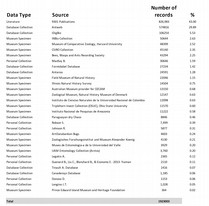

The goal of antmaps.org is to provide an intuitive and efficient framework for professional and amateur myrmecologists to visualize
the known distribution of ant species or higher taxon, and to access the underlying records for those data.
antmaps.org is not a database per se, but rather a client-end tool for visualizing and interacting with the GABI database.
The Global Ant Biodiversity Informatics (GABI) project
(Guénard
et al. 2017 Myrmecological News) is an attempt to consolidate and curate a comprehensive global database of ant species
distributional records, including literature records, museum databases, and online specimen databases. As of July 2018, the database includes records
from over 9300 publications, most major digitized museum collections, and specimen databases such as AntWeb. In total, the database now has over 1.9
million records including around 15000 described ant species and subspecies. The GABI data are currently housed in a
PostgreSQL database that synchronizes once per week with antmaps.org.
Antmaps.org is intended to complement other invaluable web tools for myrmecology such as AntWeb and
AntWiki. While those are more comprehensive and multifaceted resources on ant biodiversity, antmaps.org is specifically
built for a single purpose; mapping species distributions and aggregate diversity patterns and visualizing data from GABI.
In many ways GABI is raw material for myrmecologists, a point of departure for characterizing and understanding the geographic distribution of a species
or group, and not a final answer. There are errors and uncertainties that are inherited from the data sources, and others that might have been introduced
during the databasing process. Distributional data in GABI should be viewed critically before forming the basis of scientific investigation. New records
are continuously compiled and taxonomic changes updated within GABI to provide the latest developments on ant biogeography and taxonomy (with a few weeks
needed for records to be processed). We welcome the participation of the myrmecological community in these efforts. If you see something questionable,
click "Report data issue" and let us know about the specific issue, or contact us
to let us know about information we might have missed. One of the main goals of antmaps.org is to facilitate and accelerate this process.
Data Sources (August 2018)
The full description of the project and data sources can be found in
Guénard
et al. 2017. Here we list the main components of the data. For a more detailed breakdown within these categories, click on the image thumbnail.

Literature records: 827,000 records (~43%)
Database collection: 744,000 records (39%) (e.g. Antweb 575,000 records)
Museum specimens: 301,000 records (16%)
Personal Collections: 48,000 records (2.5%) (person providing their personal records)
Literature records have been compiled by three groups:
Benoit Guénard and Economo lab members (approximately 600,000 records, from 7660 publications).
Mike Weiser, working with Rob Dunn and Nate Sanders (approx. 90,000 records, from 925 publications).
Kiko Gomez (approx. 30,000 records from 717 publications)
Beyond Data Compilation
Besides the process of data compilation and associating each species record with a valid taxonomic name and a particular geographic region to be correctly
displayed on antmaps.org, we also work on other aspects of the information briefly introduced below.
While far from perfect, antmaps.org also attempts to provide accurate information about species distribution and identity. Important efforts are thus
directed to identify potential misidentifications that have accumulated over centuries of myrmecology. Patiently and one by one, nearly 25,000 records have
been identified as potentially erroneous and many more probably remains. Slowly, as we detect these mistakes those are flagged within GABI and displayed on
antmaps.org to prevent other researchers to repeat them and to adopt a cautious attitude towards them. If you are aware of such errors, don’t hesitate to
contact us to let us know about them so the ant community could benefit from this knowledge.
Taxonomy is a living field of biology. Species identity and definition are not fixed and from time to time might change in function of new research being
developed. We attempt to track these changes by following taxonomic literature and use Antcat.org as an ultimate reference. Monthly, taxonomic updates including
new taxonomic descriptions, synonymy, splitting or any other changes are implemented within GABI to provide the latest development on species taxonomy and
distribution.
Biological invasions are increasingly widespread and ants are no exception. Native and exotic distribution are being tracked in GABI/antmaps.org to display
known distribution of these species established outside their native range. However, establishing the extent of native versus exotic range represents in many
instance a real challenge, with knowledge for many species relying on fragmentary information or guess more than proven results. Here we attempt to display those
to the best of our knowledge and are looking for new studies determining exact ranges. You might disagree with our classification and we’ll be happy to discuss
how our decisions were taken or on which sources they are relying. Here again, do not hesitate to contact us to let us know new records or simply inquiry about
the status of a given species.
Finally, note that continuous updates are being performed in GABI and thus antmaps.org, and we encourage you to note the date at which you retrieve a
particular information as it is subject to potential changes in the future.
Data Accessibility
For the very near future, the full GABI data and citation information are not freely accessible for download, because we are still implementing data cleaning
and processing steps, in addition to a large-scale georeferencing effort that is not done. We’d like to avoid large blocks of the data circulating until we can
be sure of its quality and completeness. We apologize for the inconvenience. In the meantime, if you need to get access to specific records or have an idea for
an analysis using the data, we encourage users to contact us directly and have never
denied anyone access. We don’t advise using raw data taken from antmaps.org for research/publication without discussing the data with us first.
Credits
The GABI project is led by
Benoit Guénard and Evan Economo, in collaboration with Michael Weiser, Kiko Gomez,
and Nitish Narula. Many other people have helped by contributing data and/or expertise to the project and we would like to warmly thank them.
antmaps.org is led by Evan Economo (OIST) in collaboration with Benoit Guénard (HKU). Julia Janicki is responsible for most
of the interface design and front-end development. Matt Ziegler and Nitish Narula designed the database structures and backend functionality. It was developed using
the Django (1.7) framework and visualized with Leaflet and D3.
Both GABI and antmaps.org are funded by OIST, JSPS Kakenhi, and the University of Hong Kong.
Citations
If you use the GABI data in research product, please cite the paper below in your study. This citation is important as it documents how the data were assembled.
Guénard, B., Weiser, M., Gomez, K., Narula, N., Economo, E.P. (2017) The Global Ant Biodiversity Informatics (GABI) database: a synthesis of ant species geographic
distributions. Myrmecological News 24: 83-89.
If you view data through antmaps.org, please also cite this paper (which is about the interface, not the dataset per se) in addition to the one above. Thank you.
Janicki, J., Narula, N., Ziegler, M., Guénard, B. Economo, E.P. (2016) Visualizing and interacting with large-volume biodiversity data using client-server web-mapping
applications: The design and implementation of antmaps.org. Ecological Informatics 32: 185-193
Finally, when browsing antmaps.org, you can see the underlying citations that are behind the data. It can be hard to cite hundreds or thousands of papers at
the same time, but if the information you are looking for is due to a particular study or collection, say for example a study that discovered Pheidole
megacephala in Okinawa, or maybe a recent checklist contributed most of the records for a particular region, please try to cite those original sources,
as well! antmaps.org is intended to help you find those sources, not replace them.
We also appreciate it if you credit antmaps.org if you use the maps or data in a talk.
Species Mode Legend Code
Native : Records that are considered native.
Exotic : Data that represent non-native species records with established populations in the wild.
Indoor Introduced : Data that represent non-native species records without established populations in the wild (e.g. in buildings, greenhouses, airport, quarantine surveys).
Need Verification : Uncertain records in need of verification to be classified as valid or dubious.
Dubious : Erroneous records reported in previous publications or databases but later identified as misidentifications.
Those are presented to prevent potential future misidentifications.
 : Records that are considered native.
: Records that are considered native.  : Data that represent non-native species records with established populations in the wild.
: Data that represent non-native species records with established populations in the wild. : Data that represent non-native species records without established populations in the wild (e.g. in buildings, greenhouses, airport, quarantine surveys).
: Data that represent non-native species records without established populations in the wild (e.g. in buildings, greenhouses, airport, quarantine surveys). : Uncertain records in need of verification to be classified as valid or dubious.
: Uncertain records in need of verification to be classified as valid or dubious.  : Erroneous records reported in previous publications or databases but later identified as misidentifications.
Those are presented to prevent potential future misidentifications.
: Erroneous records reported in previous publications or databases but later identified as misidentifications.
Those are presented to prevent potential future misidentifications.